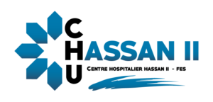

Département Informatique du CHU Hassan II de Fès.
Soutenance · Département Informatique · 2024–2025
Le parcours des urgences tenu par des règles, pas par la mémoire des équipes.

Présenté par
Younes Basir
Université Privée de Fès
Stage, Département Informatique — Direction Générale du CHU Hassan II de Fès
Plateforme Intelligente de Coordination des Urgences
01 — Le terrain
Au CHU Hassan II, l'accueil, l'infirmier, le médecin et le chef de service se relaient sur le même patient. Sans état partagé, la priorité, le lit et la responsabilité divergent.
Département Informatique du CHU Hassan II de Fès.
Un parcours, des ressources, des droits. Pas un tableau de plus.
Département Informatique, année 2024–2025.
02 — Le problème
ArrivéeAccueilTriageAttenteSoinsOrientation
Comment savoir, à tout moment, où en est le patient, qui a le droit d'agir, et quelle ressource est vraiment libre ?
PICU répond par une plateforme commune. Elle ne se substitue pas au jugement clinique.
03 — Ce que PICU doit tenir
Métier
Système
04 — Qui a le droit
Transversal. Contrôle d'accès, traçabilité, cohérence, temps réel.
05 — Comment c'est construit
Itératif, oui. Scrum, non : pas de sprints ni de cérémonial à montrer. Chaque palier respecte les règles du précédent.
06 — Où s'arrête le navigateur
07 — Le modèle
Règle critiqueUne même ressource ne doit pas être affectée simultanément à plusieurs visites actives.
08 — Où vit la décision
frontend/Une page par rôle. L'appel au serveur n'est pas dispersé dans l'interface.
backend/La route reçoit. Le service décide. Masquer un bouton ne vaut pas une autorisation.
postgresql/Contraintes, transaction, historique. C'est là que le lit reste unique.
Git conserve l'historique réel. Les branches et les revues se montrent seulement si elles ont vraiment été utilisées.
09 — Ce qu'il faut prouver
La qualité ne se voit pas sur la maquette. Elle se voit quand deux personnes veulent la même ressource, et qu'une seule l'obtient.
| Épreuve | Ce qui doit rester vrai |
|---|---|
| File | La priorité P1–P5 change l'ordre, pas le hasard. |
| Visite | Créer le patient écrit vraiment en base. |
| Parcours | Accueil, triage, affectation, clôture s'enchaînent. |
| Droit | Une action hors rôle est refusée par le serveur. |
| Course | Deux affectations simultanées, une seule active. |
Les nombres du jour — lancés, réussis, échoués — viennent de l'exécution, pas d'un taux estimé.
10 — Livraison
Enchaînement visé, pas une prod hospitalière
Un workflow GitHub Actions, « secret guard », s'exécute sur les pushes et les pull requests. Il échoue si un fichier .env est versionné.
Lint, build, tests automatiques, environnement de validation et déploiement contrôlé restent à industrialiser. Ce n'est pas une mise en production hospitalière.
Aujourd'hui, le dépôt bloque les fichiers .env. Lint, tests automatiques, staging et déploiement ne sont pas encore cette chaîne.
11 — La cohérence
L'interface ne suffit pas. La décision est prise dans une transaction serveur : une visite active occupe la ressource, la seconde demande est refusée.
La confidentialité et la conformité ne sont pas « réglées » parce que le RBAC existe. Elles demandent une validation de l'établissement.
12 — Le flux
13 — La ressource
Zones, puis salles, puis lits. Quitter un lit ne le rend pas affectable. Le nettoyage est un état, pas une case mentale.
Dire que le cycle V4 est livré seulement s'il l'est vraiment dans le code du jour.
14 — Les écrans
Chaque tableau de bord cache ce que le rôle ne peut pas faire. Les SSE poussent le changement ; si le flux coupe, l'écran se rattrape. La base reste devant.
La supervision V4 se montre dans l'état réel du dépôt, avec des patients fictifs.
15 — En direct
Ce que l'on voit n'est pas encore ce qui est prouvé. La démo s'adosse aux tests réellement passés.
16 — Bilan
PICU coordonne le flux. Il ne décide pas à la place du clinicien.
PICU · CHU Hassan II de Fès
Je suis à votre disposition pour vos questions.
Younes Basir · Université Privée de Fès · 2024–2025
Annexe
Annexe
Annexe
Annexe · ne pas laisser affiché
Trois couches. PostgreSQL pour les transactions et les contraintes.
Le serveur notifie les écrans. Un secours existe si le flux coupe.
Contrôle serveur, transaction, verrou. Pas seulement l'interface.
Itératif et incrémental. Pas de cérémonial Scrum à revendiquer.
Secret guard en place. Pipeline complet : perspective.
Non, sans validations métier, cliniques, sécurité et données.
Non. Assistance future, sous contrôle humain.
Cohérence des états et concurrence sur les ressources.